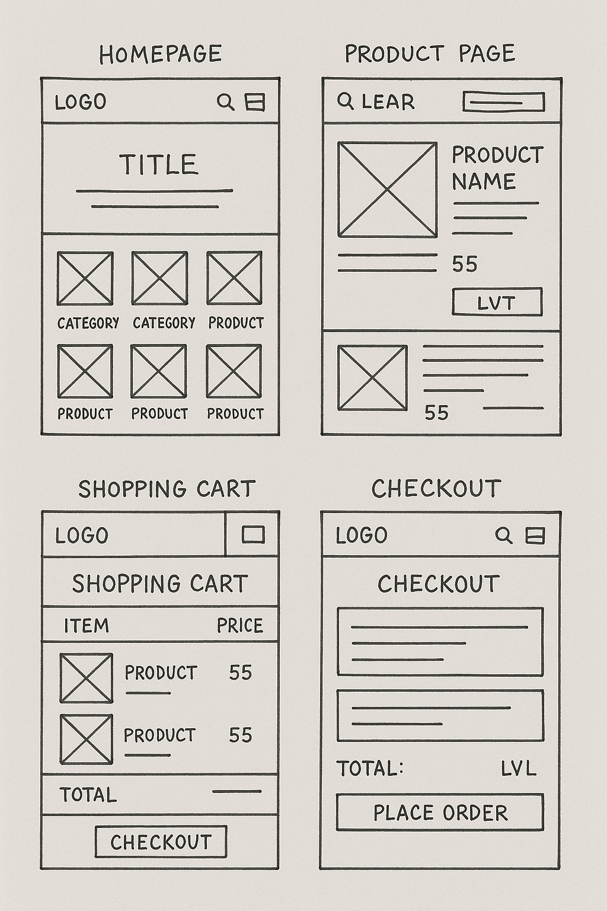

Plant Shop
Project Description:
In this project, I created a fully SQL-driven e-commerce website for indoor plants using PHP, MySQL, HTML, CSS, and JavaScript. The goal was to provide users with a simple, aesthetic, and functional shopping experience. The site includes features such as an account and login system, product display, shopping cart functionality, fictional checkout, order history, and an admin panel for managing products, orders, and customers. The design is clean and cozy, reflecting the nature of indoor plants.
Challenges and Solutions:
One of the main challenges of this project was to design an intuitive and seamless user flow for the entire shopping experience — from adding items to the cart to completing a fictional checkout. I addressed this by carefully planning the user flows and creating wireframes and interactive prototypes in Figma, which I tested with users to ensure they could easily navigate the site.
Another challenge was implementing a functional admin system for managing products and customers without overcomplicating the backend. The solution was to use a superuser in the users table in MySQL instead of creating a separate admin table, which simplified the system and reduced complexity in the backend logic written in PHP.
Process:
- Sketches and Wireframes: I began by sketching out the core pages such as the product page, shopping cart, and checkout flow. These initial sketches were then developed into wireframes using Figma to plan the structure of each page. 
- User Flows: I designed user flows that covered the entire process from browsing products to checkout to ensure a smooth and logical experience.
- Prototypes: I built interactive prototypes in Figma to show how the pages would function together and tested them with users to gather feedback on usability.
- User Testing and Feedback: During testing, I received feedback that the navigation felt intuitive, but I made some adjustments to button placement to improve visibility and accessibility.
Result:
The final design improved the user experience by offering a clean, visual layout that resonated with the target audience. After implementing user feedback and refining the design, users reported a fast and easy shopping experience. I also observed that users were able to find and purchase products more efficiently in the test version of the store, confirming that the user flow had been enhanced. In addition, users appreciated the cozy and visually pleasing design, which created a warm and welcoming shopping atmosphere.